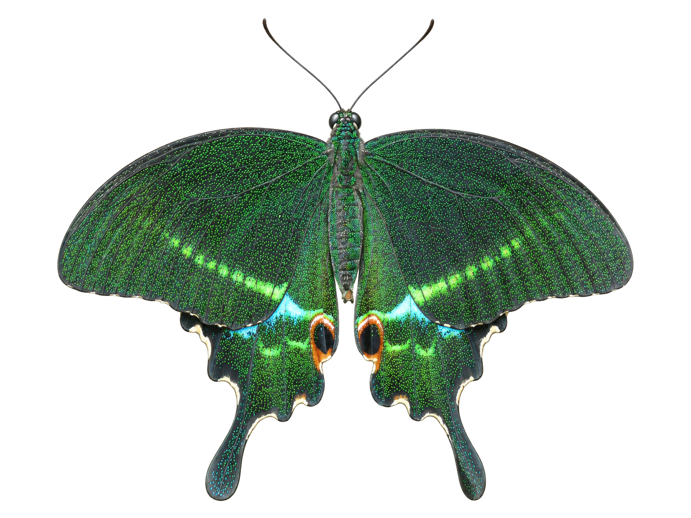

Papilionidae · 018 / 165
প্যারিস পিকক
Papilio paris

বৈশিষ্ট্য ও শনাক্তকরণ
পেছনের ডানায় বড় নীলচে-সবুজ উজ্জ্বল দাগ প্রধান বৈশিষ্ট্য। আলো ও দেখার কোণে রঙ বদলায়।
স্ত্রী ও পুরুষের পার্থক্য
পর্যালোচিত ওকিনাওয়ার রেকর্ডে লিঙ্গভেদের বিস্তারিত নিশ্চিত হয়নি।
আকার
ডানা মেলে বিস্তার ৮৫–১০৫ মিমি; হংকংয়ের Leisure and Cultural Services Department-এর প্রজাতিবিবরণ। শুধু ওকিনাওয়ার আগন্তুক নমুনার পরিমাপ নয়।
ওকিনাওয়ার দ্বীপে রেকর্ড
স্থানীয় সূত্রে উল্লিখিত দ্বীপের রেকর্ড নিচের সূত্রে দেখুন। ইয়োনাগুনিতে সংগ্রহের এবং ইশিগাকিতে দেখার প্রতিবেদন আছে। এগুলো স্থায়ী প্রতিষ্ঠার প্রমাণ নয়।
আবাসস্থল
দ্বীপের রেকর্ড আবাস-তালিকায় দেখুন। ওকিনাওয়ায় দীর্ঘমেয়াদি আবাস-পছন্দের বিস্তারিত নিশ্চিত হয়নি।
জীবনযাপন ও অতিরিক্ত তথ্য
তাইওয়ানের ঘনিষ্ঠ প্রজাতির সঙ্গে বিভ্রান্তি হতে পারে। মিয়ে প্রদেশের পুরোনো রেকর্ড অন্য ঘনিষ্ঠ প্রজাতি হিসেবে সংশোধনের উল্লেখ আছে।
শূককীট ও খাদ্য উদ্ভিদ
পর্যালোচিত প্রাদেশিক সূত্রে খাদ্যগাছ ও বন্য শূককীটের বিস্তারিত নিশ্চিত করা যায়নি; অজানা হিসেবে রাখা হয়েছে।
তথ্যসূত্র ও সহায়ক পাঠ
- 沖縄蝶類生態図鑑：ルリモンアゲハ
ডেটায় উল্লেখিত সূত্র দেখার তারিখ: 2026-11-10 - 香港康楽及文化事務署：Butterflies in Urban Parks
ডেটায় উল্লেখিত সূত্র দেখার তারিখ: 2026-11-10
তথ্য সরবরাহকৃত ডেটার উপর ভিত্তি করে তৈরি (হালনাগাদ: ১০ নভেম্বর ২০২৬)। কোনো দ্বীপের রেকর্ড সেখানে বর্তমান স্থায়ী বসবাস বা সহজে দেখা পাওয়ার নিশ্চয়তা নয়। চিত্র নির্দেশক; শনাক্তকরণে বাস্তব নমুনা ও সূত্র মিলিয়ে দেখুন।